Hoy en dia las paginas web ya no necesitan tanto un boton que diga "home". El boton que lo lleva al homepage puede ser el logo de Econs.
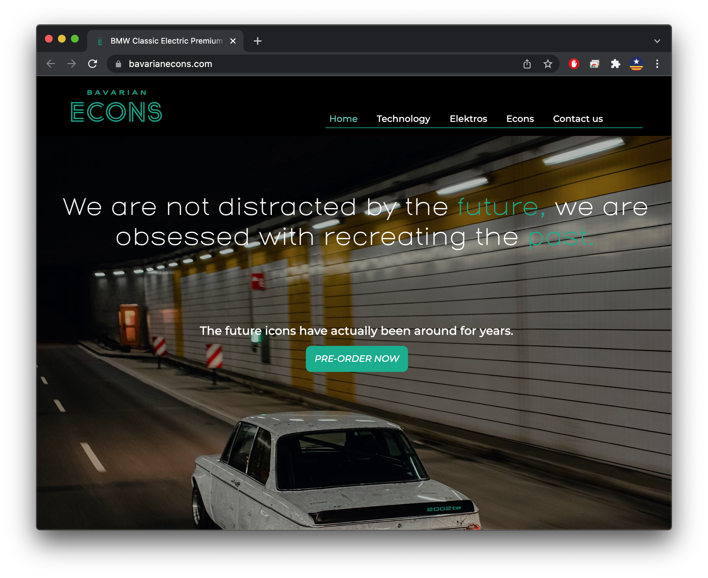Me di cuenta que la pagina no responde a los cambios de tamaño del navegador en el computador, entonces cuando lo achico el condenido de la pagina empieza a esconderse.
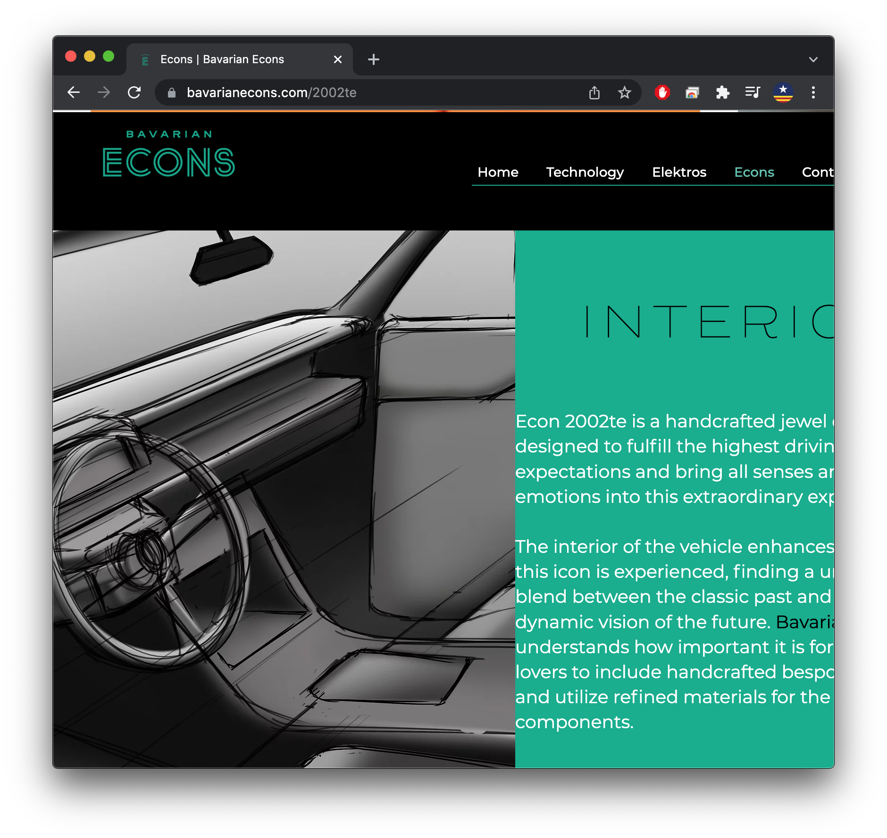Otro ejemplo es fijese que cuando el navegador esta mas angosto el espacio entre el texto y la imagen desaparece. Eso se ve en toda la pagina.
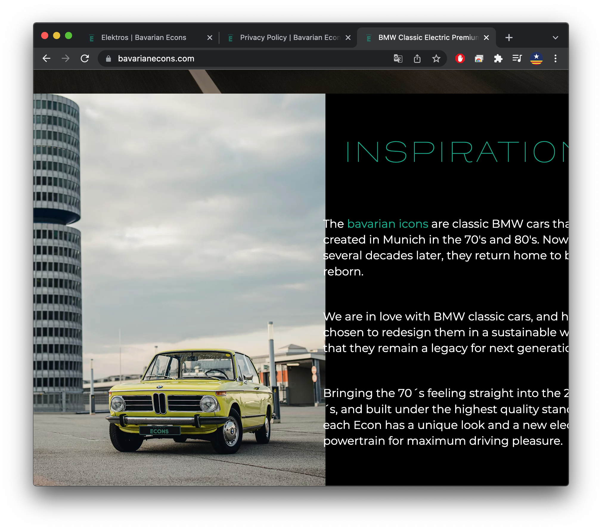Estos me imagino que deberian ser los nombres de las imagenes y no de los archivos cierto? Me di cuenta tambien que esta es la unica galeria de fotos donde hay imagen + texto.
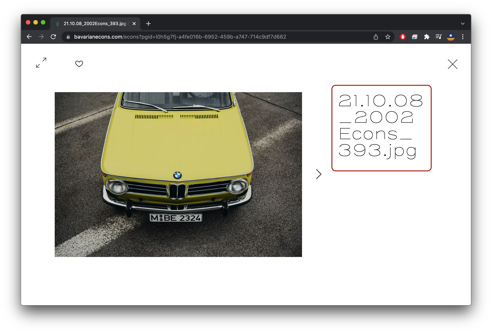El boton del corazon que hace cuando le hace click?
Esa informacion del usuario queda guardada y le llega a uste para poder analyzar datos de cualquier tipo?
Le da informacion al usuario de alguna otra manera para poder guardar sus fotos favoritas o algo por el estilo?
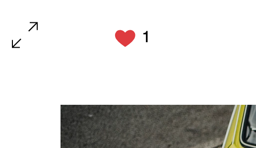...depending strike and on driving...
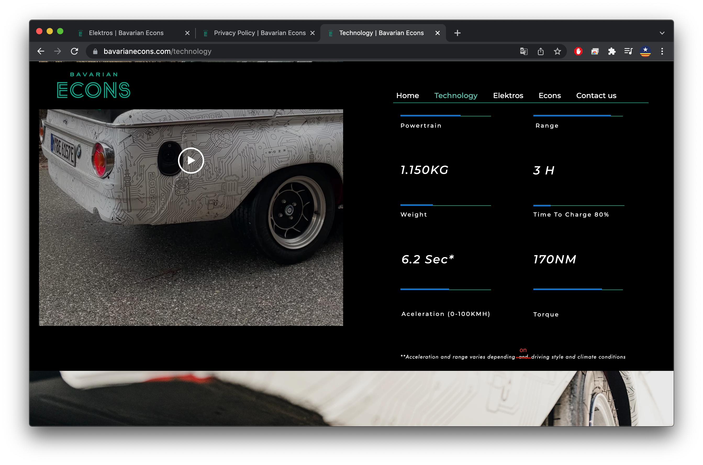70's & 2020's tiene las apostrofes que se usan para otro tipo de contexto. Use " ' " envés de " ´ ". Creo que esa apostrophe tambien hace que el "´s" se le corte al segundo renglon.
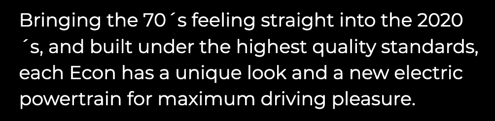Los nomberes de los botones no cuadran con los nombres de la pagina.
Este es la pagina de Elektros pero se llama "econs". Mejor que se llame "elektros"
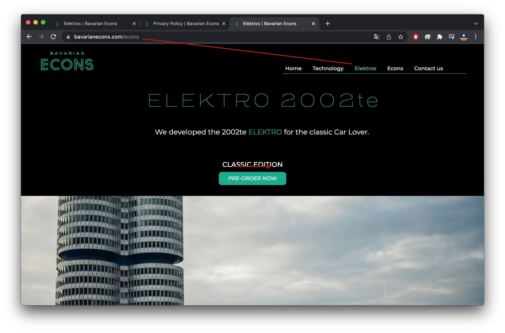Este es la pagina de Econs pero se llama "2002te". Mejor que se llame "econs"
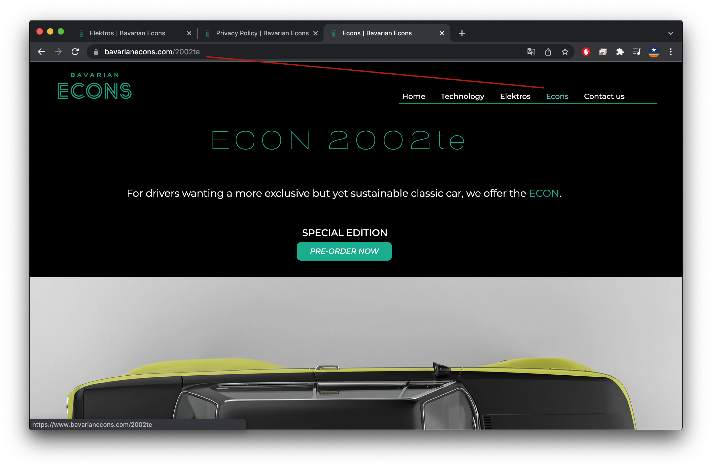Ese "-10" al final va a confundir a la gente hahaha. Dejelo en "contact"
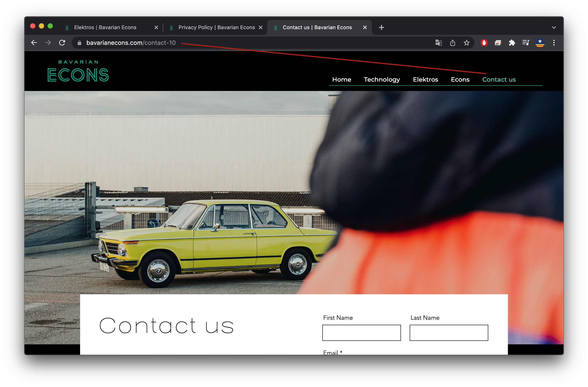En la pagina technology no vi el formulario para contactarlos. Como ya tienen una pagina dedicada al formulario tienen dos opciones:
Hay un espacio entre la franja negra y la parte de arriba del navegador. Cierre esa vaina su merce!
No le puedo hacer click a la primera imagen que abre la galeria de abajo.
En el celular se ve demaciado espacio aqui en la pagina 2002te
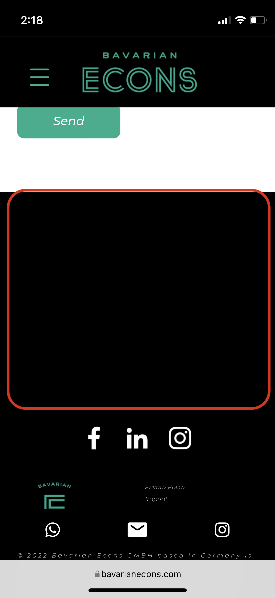Este tamaño de texto en el celular se ve muy chiquito! Toca agrandarlo!
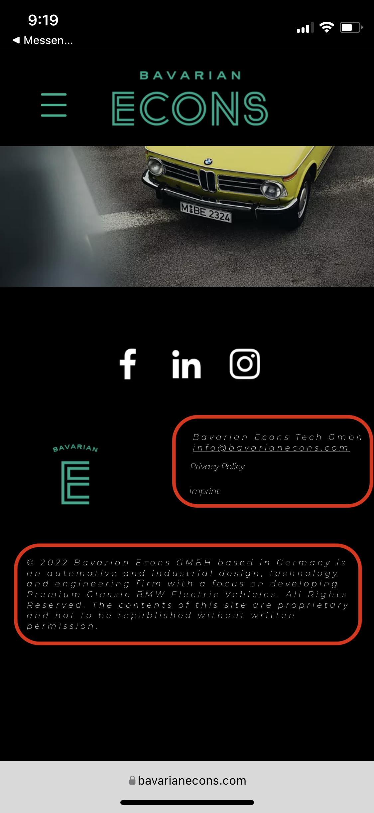